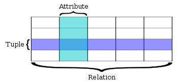
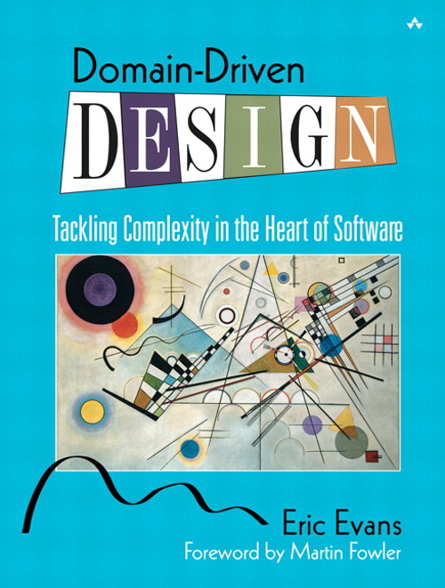
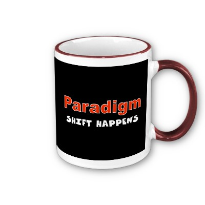

Di cosa parliamo
Database NoSQL e MongoDB
Ordine del giorno:
- Cosa sono i database NoSQL
- Perchè esistono e ci interessano
- Differenze dai DB relazionali
Ordine del giorno:
- Cosa è
- Chi lo usa
- Cosa abbiamo fatto e ottenuto
NoSQL:
- Alternativa migliore dei DB relazionali?
- Mandiamo in cantina i DB relazionali?
Il termine NoSQL
Johan Oskarsson, Hadoop Meetup SF 2009.
Per approfondire BigTable e Dynamo.
Primo uso: anni '90, Carlo Strozzi
Il termine NoSQL
Eric Evans (non affiliato con l'Eric Evans del DDD!):Opensource, distributed, nonrelational database
NoSQL come movimento piu' che come tecnologia
NoSQL è dunque un neologismo che identifica le seguenti caratteristiche:
- Not using relational model
- Running well on cluster
- Open-source
- Built for the 21st century web estates
- Schemaless
Il modello relazionale
Tecnologia di successo da anni - Persistenza
- Concorrenza
- Integrazione
- Modello relazionale comune
- Dialetti SQL simili
Vecchi problemi e nuove esigenze
- Impedance mismatch
- Mole di dati cambiata
- Costi: scalare orizzontalmente
- Performance
-
Vecchio problema:
- Nuove esigenze:
Impedance mismatch
In-memory model <> relational model
Diverse strutture dati, record innestati, liste...
'90 Object database
ORM (NHibernate, ActiveRecord...)
Nuove esigenze: grandi datasets, social network, aumento utenti...
- Scalare orizzontalmente
- Robustezza
RDBMS clustered (Oracle RAC e MS SQL Server) ma hanno un shared disk subsystem (bottleneck) e sono prezzati su una single-server assumption
Data models
Come percepiamo e manipoliamo i dati (data model) è diverso da come il database li memorizza(storage model)
I database relazionali si basano sul modello relazionale
Una tupla (o un insieme di tuple) non sempre è una struttura adatta (nesting?)
- Key-value (aggregate-orientation. Redis, Dynamo, memcached)
- Column (aggregate-orientation. BigTable, HBase, Cassandra)
- Document (aggregate-orientation. MongoDB, RavenDB, CouchDB)
- Graph (Neo4J, Infinite Graph, OrientDB, FlockDB)Quali sono i libri preferiti dagli amici dei tuoi amici?
Key-value, document e column-family hanno tutti una unità fondamentale di memorizzazione di dati strettamente collegati (rispettivamente: value, document, column-family)
Aggregate: collezione di oggetti collegati che vogliamo trattare come una unità. It is a unit for data manipulation and management consistency.
Da wikipedia:A collection of objects that are bound together by a root entity, otherwise known as an aggregate root. The aggregate root guarantees the consistency of changes being made within the aggregate by forbidding external objects from holding references to its members.
Gli aggregati costituiscono i confini per le transazioni acide con il DB
...DDD?
Distribuzione dei dati
L'aggregato è inoltre l'unità naturale di distribuzione
(Auto)Sharding (dati differenti su nodi differenti) e replication (2 tecniche: master-slave o peer-to-peer)
Una delle 2 o entrambe
Sharding == no joins!

Consistenza
La replica aumenta la probabilità di conflitti write-write
Update consistency: Conflitti write-write (2 persone aggiornano contemporaneamente lo stesso dato in maniere diverse).
2 approcci per la risoluzione dei conflitti: pessimistico (write-lock) e ottimistico (rileva i conflitti e agisce per risolverli. CVS-style).
Spesso si usa un singolo nodo per le write.
Consistenza
Read-write consistency
A inserisce un ordine di prodotto
B legge le righe e il prezzo complessivo dell'ordine
A aggiorna il prezzo complessivo dell'ordine
Database relazionali: transazioni ACID
Database NoSQL: update atomici all'interno di un aggregato (inconsistency window per aggiornamenti su molteplici aggregati)
Consistenza
Eventual consistency
Eventually all nodes will be updated to the same value
Es. prenotazione della ultima stanza da clienti in diverse zone del globo
Vantaggi di un sistema distribuito
- Gestire più grandi quantità di dati
- Processare più letture o più scritture
- Availability
Ma il clustering introduce complessità
CAP theorem
Eric Brewer, 2000
Two conflicting requests arrive at distinct locations at a time when a link between them is failedUn sistema distribuito non può essere allo stesso tempo consistente, disponibile e partition tolerant (errori di networking).
Consistency
Availability: if you can talk to a node in the cluster, it can read and write data
Partition tolerance: il sistema puo' sopportare che il cluster si divida in piu' partizioni incapaci di comunicare tra di loro
Ci sono casi in cui si puo' avere a che fare con risposte inconsistenti a fronte di certe richieste... ... ma questi casi dipendono strettamente dal dominio e dalla conoscenza del dominio!
Schemaless
Dati non uniformi
+ Responding to change over following a plan
Working software over comprehensive documentation
+ Ti concentri sul domain design e non sullo schema
+ Utile in fase di prototipizzazione
Schemaless
- Complessità nella migrazione dei dati
Incremental migration l'applicazione legge i dati dalla vecchia colonna e li riscrive nella nuova (rischio dati non migrati)
Schema versioning esecuzione codebase diversi a seconda della versione dello schema (transation layer)
Perchè dunque i database NoSQL?
- 1) Produttività nello sviluppo delle applicazioni (evitare frustrazioni da impedance mismatch)
- 2) Dati con dimensioni e performance che richiedono un cluster
- 1) Produttività nello sviluppo delle applicazioni (evitare frustrazioni da impedance mismatch)
- 2) Dati con dimensioni e performance che richiedono un cluster
Perchè rimanere coi RDBMS?
- 1) Sono ben conosciuti (università?)
- 2) Tools
- 3) Se si hanno pochi dati
- 4) Se da test non risultano vantaggi soddisfacenti o vantaggi lato programmazione
- 1) Sono ben conosciuti (università?)
- 2) Tools
- 3) Se si hanno pochi dati
- 4) Se da test non risultano vantaggi soddisfacenti o vantaggi lato programmazione
Abbandonare i DB relazionali?
No, ma usare differenti data store in diverse circostanze.
Polyglot persistence
Polyglot programmer
Capire la natura dei dati che vogliamo salvare e come vogliamo manipolarli.
Cosa è MongoDB
Database opensource document-based NoSQL sviluppato da 10gen.- Schemaless
- Documenti strutturati JSON-like
- Queries
- Performance (indici)
Cosa è MongoDB
- Replication (modello master-slave con votazione)
- Scala orizzontalmente (sharding)
- Framework di aggregazione
- Eventually consistent
Chi lo usa
Cosa abbiamo fatto
Corso free di 7 settimane online.
( Video, esercizio, video, esercizio, prova settimanale... )*7 settimane
Final exam
education.10gen.comReferences
- NoSQL Distilledby Pramod J. Sadalage e Martin Fowler
- Sql vs NoSQL which is better
- NoSQL, Present Past & Future (Gabriele Lana)
- Google I/O 2012 - SQL vs NoSQL: Battle of the backends